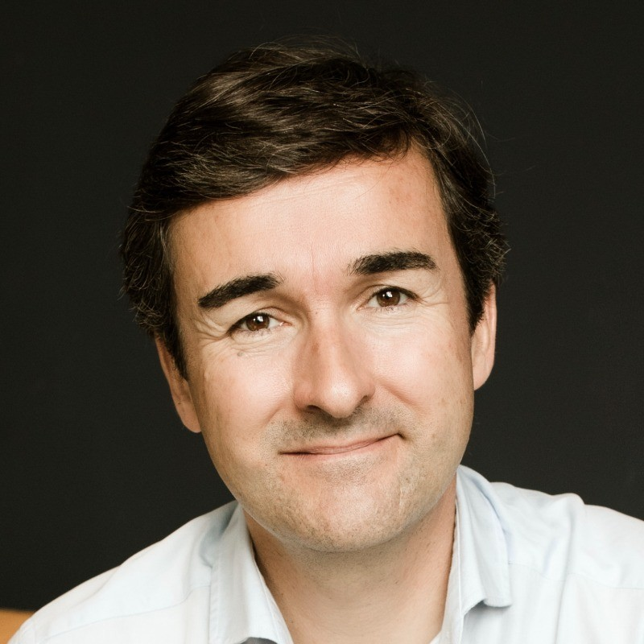

Actualmente COO & CTO en Creditas, scaleup tecnológica de servicios financieros en Brasil y México. Anteriormente, CIO y CHRO en el Grupo BBVA. Asesor de Wander y mentor en Endeavor. Ingeniero Industrial por la Universidad de Zaragoza y Master en Gestión de la Tecnología por el MIT. Investiga sobre consciencia, liderazgo y organizaciones. Alpinista en el Pirineo.